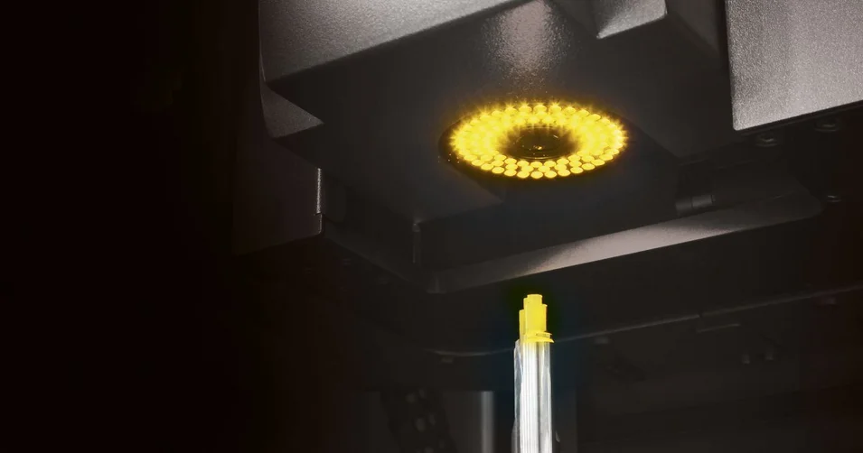

Verificar e medir: as suas vantagens
Descubra o que é possível fazer com a ZOLLER nas ferramentas de inspeção. Testes próximos ao processo ou análises de ponta, incluindo SKP, aspereza e criação de gémeos digitais.
Saber mais
Perguntas frequentes
De acordo com as dimensões e os tipos de ferramentas a inspecionar, a ZOLLER disponibiliza três tecnologias de câmara diferentes para o »pomBasic«. Desta forma, cada cliente obtém uma solução ideal para atender a todos os seus requisitos.
Sim, além de muitas outras vantagens, o »pomBasic« destaca-se pela sua grande facilidade de utilização. Assim, as funções mais importantes e mais utilizadas podem ser organizadas em grupos de favoritos. Desta forma, todas as operadoras e todos os operadores têm as funções de medição pretendidas disponíveis de forma rápida e simples.
O software de controlo disponibiliza um zoom digital para todas as versões da câmera. Além disso, as câmaras das versões »pomColorCam« e »pomMicroCam« dispõem de um zoom ótico.
Através da função DXF, as ferramentas podem ser alinhadas de forma rápida e fiável com o seu contorno nominal no formato DXF.
Para a luz incidente, uma função disponibiliza ajustes da iluminação automáticos com um simples toque num botão. Além disso, através da função de acesso rápido, é possível realizar ajustes simples e fáceis para obter resultados ótimos.
Idealmente, a gama de diâmetros do »pomBasic« começa nos 3 mm e é concebida para aumentar progressivamente. No caso do »pomBasic MTI«, a gama de diâmetros começa já nos 0,2 mm e também é concebida para aumentar progressivamente.
Os percursos dos eixos X e Y são idênticos em ambas as versões do aparelho. Isto permite medir com fiabilidade até mesmo ferramentas com diâmetro da ferramenta maior com o »pomBasic MTI«.
Está disponível uma vasta gama de porta-ferramentas para os mais diversos setores de ferramentas.
Permite obter imagens nítidas de toda a ferramenta, o posicionamento automático da câmara em relação à superfície da ferramenta, bem como o controle por CNC do eixo da câmara através de um joystick.
A iluminação coaxial está diretamente integrada no sistema de câmera e garante uma iluminação ótima e sem sombras da superfície da ferramenta, especialmente no caso de microferramentas.

Descubra o que é possível fazer com a ZOLLER nas ferramentas de inspeção. Testes próximos ao processo ou análises de ponta, incluindo SKP, aspereza e criação de gémeos digitais.

A troca individual sobre os seus objetivos e as nossas ideias para os alcançar. A consultoria online da ZOLLER diretamente da Smart Factory. Marque já a sua consulta.